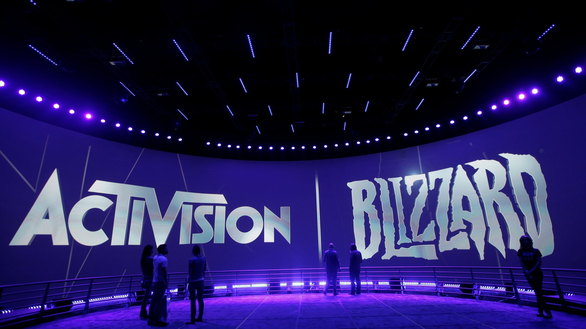

Minden, amit az Activision Blizzard felvásárlásáról tudni érdemes
Nem sokszor fordul elő (talán ötévente egyszer?), hogy olyan nagy horderejű videójátékos hírről számolhatunk be, mint az Activision Blizzard felvásárlása, melyet tegnap jelentett be a Microsoft. Ez egy tényleg hatalmas jelentőségű fejlemény, amely komoly hatással lehet a játékipar egészére, ezért fontosnak találtuk, hogy egy nagyobb cikkben tisztázzunk néhány kérdést az akvizícióval kapcsolatban. A következő hónapok (vagy inkább évek) során még sok szó fog esni a Microsoft eme lépéséről, de egyelőre lássuk azokat a gondolatokat, melyek először felmerültek bennünk és a közönségben!

Az amerikai IGN szerint a Microsoft PR-os részlege árulta el, hogy egy 68,7 milliárd dolláros üzletről van szó, amivel messze ez a legdrágább cégfelvásárlás a videójátékos ipar történetében. A rekordot egy ideig szintén a Microsoft tartotta, mikor 2021 márciusában lezárult a ZeniMax Mediafelvásárlása, ekkor végül 8,1 milliárd dollárt fizettek ki a csapatért, egy héttel ezelőtt pedig a Take-Two bejelentette, hogy 12,7 milliárd dollárért veszik meg a telefonos játékairól ismert Zyngát.
Habár az akvizíció eldöntött ténynek tűnik (az ilyesmit nem szokták bejelenteni, amíg nem egyeztek ki a felek), maga a folyamat nem néhány hét alatt fog lezajlani. A Bloomber megszellőztette az Activision vezérigazgatójának, Robert Koticknak az alkalmazottak részére szétküldött levelét, melyben arról ír, hogy a tervek szerint 2023. június 30-án véglegesíthetik az üzletet. Addig elvileg a cég függetlenül fog működni. Ez a felvásárlás jóval tovább fog tartani, mint a ZeniMaxé, azt kevesebb, mint fél év alatt véglegesítette a Microsoft.
Elég sok csapatról van szó, bár ezek jelentős része régóta (vagy soha) nem készített saját játékot, ezért nem annyira ismertek:
- Activision Publishing (kiadó)
- Blizzard Entertainment (Warcraft, StarCraft, Diablo, Overwatch)
- Beenox (az utóbbi években más stúdiók projektjeibe segítettek be, például Black Ops Cold War)
- Demonware (a játékok netcode-ján szoktak dolgozni)
- Digital Legends (mobiltelefonos fejlesztő)
- High Moon Studios ( Transformers-játékokat készítettek, 2014 óta már csak a Destiny és a Call of Duty fejlesztését segítették )
- Infinity Ward (a Call of Duty egyik elsődleges fejlesztője, lásd 2019-es Modern Warfare)
- King (Candy Crush)
- Major League Gaming (e-sport szervezet)
- Radical Entertainment (ők készítették a Prototype 2-t, utána már csak az első Destinyn dolgoztak)
- Raven Software (elsősorban a Warzone-on dolgoznak)
- Sledgehammer Games (a Call of Duty egyik elsődleges fejlesztője, lásd Vanguard)
- Solid State (mobilos stúdió, a Call of Dutyhoz hozták létre)
- Toys for Bob ( a Skylanders, valamint a modern Spyro és Crash fejlesztője, tavaly óta a Warzone-on dolgoznak )
- Treyarch (a Call of Duty egyik elsődleges fejlesztője, lásd Black Ops Cold War)
Meglehetősen vegyesen reagált a játékipar. John Carmack, az id Software egykori legendás fejlesztője azt írta, hogy anno a stúdiót majdnem megszerezte magának az Activision, így aztán érdekesnek találja, hogy végül mindkét út a Microsofthoz vezetett (az id a Bethesdán keresztül már tavaly óta a Microsofthoz tartozik). Carmack azt is megjegyezte, hogy Kotick szerinte „segítőkész” volt, ami persze nem vette ki jól magát, ezért még hozzátette, hogy nem szokott olyan gyakran interakcióba lépni vele, de még így is jobb kapcsolatot ápolnak, mint más cégvezetőkkel. Sadie Boyd, az Arkane Studios művésze üdvözölte az Activision munkatársait a Microsoft családban, és mellékesen hozzátette, hogy Bobby Kotick „b***a meg.” A Video Game History Foundation vezetője, Frank Cifaldi megjegyezte, hogy Kotick az Activision összes vezetőjét azonnal kirúgta, mikor 1990-ben megvette a céget, Seamus Blackley, az eredeti Xbox egyik dizájnere pedig azt, hogy még emlékszik rá, amikor az Activisionnél gyakorlatilag kigúnyolták, amikor előállt az új konzol ötletével. Geoff Keighley, a The Game Awards házigazdája a nagy hírözön közepette felhívta rá a figyelmet, hogy habár most mindenki a többi nagy kiadó és platform sorsán elmélkedik, az ipar innovációnak jelentős része a független fejlesztőktől és kiadóktól származik.

A DualShockers még azt a kissé képtelen (bár ezek után…) ötletet is bedobta, hogy a Microsoft akár megvásárolhatná a Nintendót, mert lenne rá elég pénzük, de ennek azért lenne néhány akadálya, például a zárt japán piac, na a Nintendó stabil pénzügyi helyzete. Meg egyébként is, a Microsoft egykori munkatársa, Kevin Bachus pont tavaly mesélte el, hogy még 1999-ben bedobták az ötletet a Nintendónak, de ők válaszul csak kinevették őket.